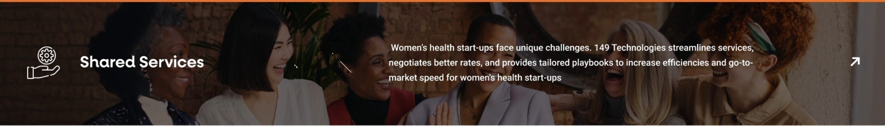

01
The shape comes from the logo
The orange block is cut from the arrow in the 149 mark. It returns in photo frames, the values layout and the call-to-action band.
Only [2%] of healthcare venture funding goes to women's health. I designed the website for 149 Technologies, a company that helps low-cost women's health start-ups grow, and stays under [150] people to remain small, nimble and disruptive.
Look serious enough for investors and warm enough for a mission about women's lives. Avoid the cold clinic look and the generic VC site.
A cut-corner shape taken from the logo arrow, teal for trust, orange for energy, and headings that pair an outlined line with a solid one.
A 19-screen site where every page speaks the same language, from the data-led home page to the story behind the name.



Click the menu, logo or buttons inside the screen to move between pages
Close-ups from the final screens, and the thinking behind each one.
Outlined letters are striking at large sizes. Today I'd keep them for big headings only and check contrast at every size.
→I'd design the phone layout alongside desktop, especially the stats row and the values around the mark.
→I'd write simple rules for how shapes and numbers move, so every page animates the same way.
→